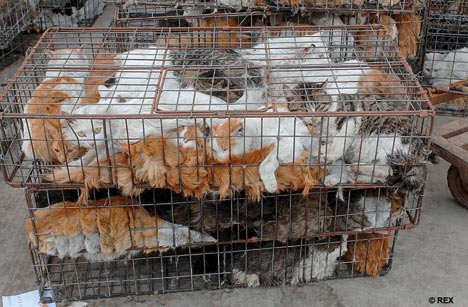
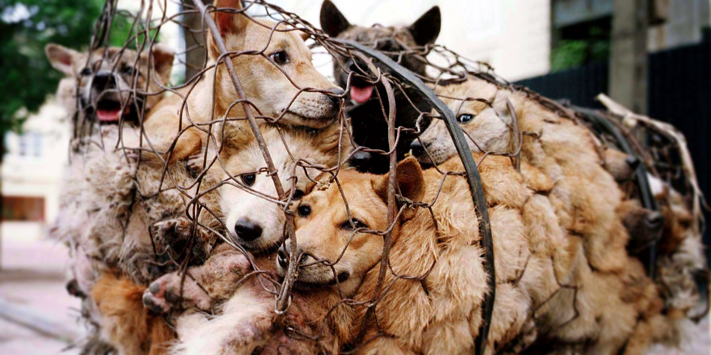

Animals all around the world are being put down with shots. Why you may ask? The problems are purebred animals. In our articles, we will talk more about this topic.
Deforestation and overfishing can
cause animals
to be left without a home,
or even death.This is mostly due to climate
change and how
it impacts our planet. Check out our
articles to learn more.